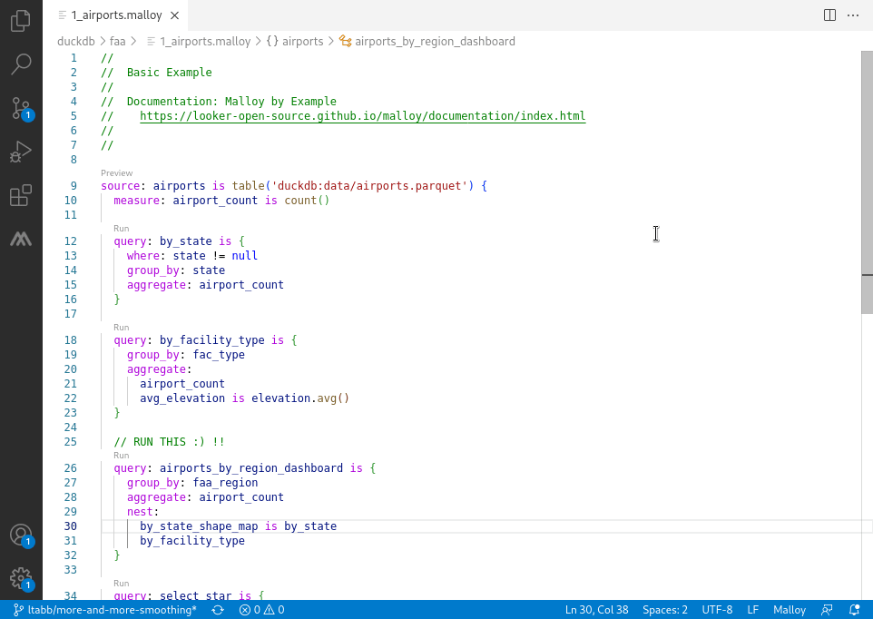

The Tao of Malloy
The Tao of Malloy

The Malloy VS Code Extension is the primary authoring environment for Malloy models. It includes schema browsing, query execution, language auto-complete, documentation, and result visualizations.
Installation
Download Visual Studio Code: If you don't already have it, download Visual Studio Code
Open the Extensions panel: Press
Cmd+Shift+X(Mac) orCtrl+Shift+X(Windows/Linux). Or open the Command Palette (Cmd+Shift+P/Ctrl+Shift+P) and type "Extensions: Install Extensions"Install Malloy: Search for "Malloy" and click Install
Or install directly from the VS Code Marketplace.
Try the samples: Clone the malloy-samples repository:
Option A: In VS Code, use Clone Git Repository from the Start screen and enter:
https://github.com/malloydata/malloy-samples.gitOption B: From the command line:
git clone https://github.com/malloydata/malloy-samples.git cd malloy-samples code .
DuckDB is built into the extension, so you can run queries immediately—try opening any
.malloyfile in thefaaorecommercefolders.
VS Code Web (github.dev)
The Malloy Extension also works in VS Code Web environments like github.dev. Press . on any GitHub repository page to open it in the browser-based editor, then install the Malloy extension.
Limitation: VS Code Web only supports DuckDB with local files (CSV, JSON, Parquet). For BigQuery, Snowflake, or PostgreSQL, use VS Code Desktop.
Configuring Connections
There are two ways to configure database connections:
malloy-config.json(recommended) — a project-level config file checked into source controlVS Code Settings — user-level configuration via the Connections sidebar
When both exist, config file connections take priority. Settings connections are used as a fallback for any connection names not defined in the config file.
Connections Sidebar
The Malloy Connections sidebar shows all configured connections grouped by source:
Config — Connections from discovered
malloy-config.jsonfiles. These are read-only in the editor; edit the JSON file directly to make changes.Settings — User-defined connections from VS Code settings. Editable through the connection editor. If a settings connection has the same name as a config connection, it appears as "(shadowed)" since the config version takes priority.
Defaults — One entry per supported database type, using built-in defaults. Click to create a new settings connection from the default.
Click any connection to open the connection editor, or use the + button to create a new connection.
Project Configuration: malloy-config.json
Place a malloy-config.json file in the root of your project (workspace root). The extension detects it automatically and picks up changes whenever you save. In multi-root workspaces, each workspace root can have its own file with independent connection namespaces.
The extension also reads persistence manifests from the config's manifestPath directory. When the builder (malloy-cli build) writes a manifest, VS Code picks it up automatically — no restart needed.
See Configuration for the full config file format, connection type properties, manifest path, setup SQL, and environment variables.
VS Code Settings
You can also configure connections through the Connections sidebar or the command palette:
Open Command Palette:
Cmd+Shift+P(Mac) orCtrl+Shift+P(Windows/Linux)Type: Malloy: Edit Connections
Click Add Connection and select your database type
Fill in the connection details
Sensitive values (passwords, tokens) are stored securely in your system keychain.
Connection Editor
The connection editor lets you view and manage individual connections:
Test — Verify the connection works with the current settings
Duplicate — Create a copy of an existing connection
Delete — Remove a settings connection
Config file connections open in a read-only view. You can still test them, but edit the JSON file directly to change settings.
Connection Settings
| Setting | Description | Default |
|---|---|---|
malloy.globalConfigDirectory |
Directory containing a global malloy-config.json, used as a fallback when no workspace config file exists (e.g. ~/.config/malloy) |
"" |
malloy.projectConnectionsOnly |
Only use workspace config file connections — hides global config, settings, and defaults | false |
Database-Specific Setup
DuckDB
DuckDB runs locally with zero configuration. It reads Parquet, CSV, and JSON files.
// Local files (relative to .malloy file) source: flights is duckdb.table('data/flights.parquet') source: users is duckdb.table('../users.csv') // URLs source: remote_data is duckdb.table('https://example.com/data.parquet')
MotherDuck
Set your token as an environment variable before launching VS Code:
export MOTHERDUCK_TOKEN=your_token_hereOr configure via Malloy: Edit Connections with databasePath set to md:.
BigQuery
OAuth (recommended for development):
gcloud auth login --update-adc gcloud config set project my-project-id --installation
Then add a BigQuery connection via Malloy: Edit Connections. Leave the service account field empty to use gcloud credentials.
Service account:
In Malloy: Edit Connections, click "Pick file" to select your service account JSON key.
Snowflake
Both password and RSA key authentication are supported via Malloy: Edit Connections.
You can also use Snowflake's connections.toml file:
Location: ~/.snowflake/connections.toml
[default] account = "myorg-myaccount" user = "analyst" password = "your_password" warehouse = "compute_wh" database = "analytics" schema = "public"
PostgreSQL
Add a PostgreSQL connection via Malloy: Edit Connections. Enter host, port, database, username, and password. The password is stored securely in your system keychain.
MySQL
MySQL connections can be configured in malloy-config.json or via environment variables — see Configuration.
Trino and Presto
Add a Trino or Presto connection via Malloy: Edit Connections. Enter the server URL and port.
Next Steps
Database Support — Overview of all supported databases
Query existing models — Explore the malloy-samples to see Malloy in action
Build a semantic model — Create your first Malloy model from scratch
Persistence — Persist sources as pre-built tables